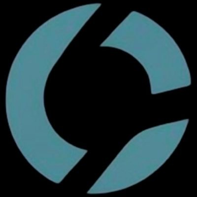

| Kod | Fon Adı | 1 Gün |
|---|---|---|
| SNY | ATLAS PORTFÖY SANAYİ SEKTÖRÜ HİSSE SENEDİ SERBEST FON (HİSSE SENEDİ YOĞUN FON) | +5.3% |
| RIH | RE-PIE PORTFÖY İKİNCİ HİSSE SENEDİ SERBEST FON (HİSSE SENEDİ YOĞUN FON) | +4.1% |
| PPS | PHİLLİP PORTFÖY BİRİNCİ SERBEST FON | +2.9% |
| MJH | AKTİF PORTFÖY FORTUNA SERBEST FON | +2.7% |
| SHU | SPARTA PORTFÖY ÜÇÜNCÜ HİSSE SENEDİ SERBEST (TL) FON (HİSSE SENEDİ YOĞUN FON) | +2.3% |
| Kod | Fon Adı | 1 Gün |
|---|---|---|
| THV | ATA PORTFÖY BARBAROS HİSSE SENEDİ SERBEST (TL) FON (HİSSE SENEDİ YOĞUN FON) | -8.5% |
| DLZ | DENİZ PORTFÖY ALİZE HİSSE SENEDİ SERBEST (TL) FON (HİSSE SENEDİ YOĞUN FON) | -8.4% |
| ESP | AURA PORTFÖY EMTİA SERBEST FON | -4.7% |
| YIT | GARANTİ PORTFÖY YARI İLETKEN TEKNOLOJİLERİ DEĞİŞKEN FON | -4.0% |
| YCK | YAPI KREDİ PORTFÖY CİHANGİR SERBEST FON | -3.9% |
| Kod | Fon Adı | 1 Hafta |
|---|---|---|
| SNY | ATLAS PORTFÖY SANAYİ SEKTÖRÜ HİSSE SENEDİ SERBEST FON (HİSSE SENEDİ YOĞUN FON) | +18.6% |
| DHV | DENİZ PORTFÖY BİRİNCİ HİSSE SENEDİ SERBEST (TL) FON (HİSSE SENEDİ YOĞUN FON) | +17.7% |
| PPS | PHİLLİP PORTFÖY BİRİNCİ SERBEST FON | +10.8% |
| AES | AK PORTFÖY PETROL YABANCI BYF FON SEPETİ FONU | +10.0% |
| MJH | AKTİF PORTFÖY FORTUNA SERBEST FON | +7.6% |
| Kod | Fon Adı | 1 Hafta |
|---|---|---|
| ESP | AURA PORTFÖY EMTİA SERBEST FON | -22.8% |
| RIH | RE-PIE PORTFÖY İKİNCİ HİSSE SENEDİ SERBEST FON (HİSSE SENEDİ YOĞUN FON) | -16.7% |
| DLZ | DENİZ PORTFÖY ALİZE HİSSE SENEDİ SERBEST (TL) FON (HİSSE SENEDİ YOĞUN FON) | -14.6% |
| YCK | YAPI KREDİ PORTFÖY CİHANGİR SERBEST FON | -10.5% |
| YAY | YAPI KREDİ PORTFÖY YABANCI TEKNOLOJİ SEKTÖRÜ HİSSE SENEDİ FONU | -8.5% |
| Kod | Fon Adı | 1 Ay |
|---|---|---|
| DKR | DENİZ PORTFÖY ONDÖRDÜNCÜ SERBEST FON | +29.7% |
| DFI | ATLAS PORTFÖY SERBEST FON | +21.6% |
| RIH | RE-PIE PORTFÖY İKİNCİ HİSSE SENEDİ SERBEST FON (HİSSE SENEDİ YOĞUN FON) | +21.4% |
| BMU | BULLS PORTFÖY MUTLAK GETİRİ HEDEFLİ HİSSE SENEDİ SERBEST FON (HİSSE SENEDİ YOĞUN FON) | +15.9% |
| POS | PARDUS PORTFÖY ONBEŞİNCİ HİSSE SENEDİ SERBEST (TL) FON (HİSSE SENEDİ YOĞUN FON) | +14.8% |
| Kod | Fon Adı | 1 Ay |
|---|---|---|
| DLZ | DENİZ PORTFÖY ALİZE HİSSE SENEDİ SERBEST (TL) FON (HİSSE SENEDİ YOĞUN FON) | -48.5% |
| ESP | AURA PORTFÖY EMTİA SERBEST FON | -31.3% |
| IHZ | ALLBATROSS PORTFÖY İKİNCİ HİSSE SENEDİ SERBEST FON (HİSSE SENEDİ YOĞUN FON) | -23.3% |
| FSP | FONMAP PORTFÖY SERBEST (DÖVİZ) FON | -23.0% |
| GMC | TEB PORTFÖY GÜMÜŞ FON SEPETİ FONU | -16.8% |
| Kod | Fon Adı | 1 Gün |
|---|---|---|
| PHE | PUSULA PORTFÖY HİSSE SENEDİ FONU (HİSSE SENEDİ YOĞUN FON) | +3.705 |
| PBR | PUSULA PORTFÖY BİRİNCİ DEĞİŞKEN FON | +2.615 |
| LTL | AHLATCI PORTFÖY HİSSE SENEDİ (TL) FONU (HİSSE SENEDİ YOĞUN FON) | +1.710 |
| TP2 | TERA PORTFÖY PARA PİYASASI (TL) FONU | +1.165 |
| BUB | BULLS PORTFÖY BİRİNCİ FON SEPETİ FONU | +1.059 |
| Kod | Fon Adı | 1 Gün |
|---|---|---|
| DIP | DENİZ PORTFÖY İKİNCİ PARA PİYASASI SERBEST (TL) FON | +9.651.697.875 |
| ZBJ | ZİRAAT PORTFÖY BAŞAK PARA PİYASASI (TL) FONU | +4.797.080.976 |
| PTE | TEB PORTFÖY BİRİNCİ PARA PİYASASI SERBEST (TL) FON | +3.811.293.005 |
| UNT | İŞ PORTFÖY ÜÇÜNCÜ SERBEST (TL) FON | +3.009.758.633 |
| PPV | AKTİF PORTFÖY PARA PİYASASI SERBEST (TL) FON | +2.492.774.034 |
| Kod | Fon Adı | 1 Gün |
|---|---|---|
| BGP | AK PORTFÖY ÜÇÜNCÜ PARA PİYASASI (TL) FONU | -1.458.229.058 |
| VPA | VAKIF KATILIM PORTFÖY PARA PİYASASI KATILIM FONU | -1.292.099.193 |
| DCB | DENİZ PORTFÖY PARA PİYASASI SERBEST (TL) FON | -1.103.339.125 |
| PPJ | AK PORTFÖY İKİNCİ PARA PİYASASI SERBEST (TL) FON | -1.020.273.546 |
| PAL | AK PORTFÖY ALTINCI SERBEST(DÖVİZ) FON | -833.279.492 |
| Kod | Fon Adı | 1 Hafta |
|---|---|---|
| DIP | DENİZ PORTFÖY İKİNCİ PARA PİYASASI SERBEST (TL) FON | +12.927.171.045 |
| ZBJ | ZİRAAT PORTFÖY BAŞAK PARA PİYASASI (TL) FONU | +6.041.610.080 |
| PTE | TEB PORTFÖY BİRİNCİ PARA PİYASASI SERBEST (TL) FON | +4.893.051.797 |
| PHE | PUSULA PORTFÖY HİSSE SENEDİ FONU (HİSSE SENEDİ YOĞUN FON) | +3.906.164.364 |
| PPI | YAPI KREDİ PORTFÖY ÜÇÜNCÜ PARA PİYASASI (TL) FONU | +3.518.243.052 |
| Kod | Fon Adı | 1 Hafta |
|---|---|---|
| ONS | İŞ PORTFÖY ONİKİNCİ SERBEST (DÖVİZ) FON | -5.500.747.125 |
| BGP | AK PORTFÖY ÜÇÜNCÜ PARA PİYASASI (TL) FONU | -4.339.810.361 |
| PRY | PUSULA PORTFÖY PARA PİYASASI (TL) FONU | -3.521.973.414 |
| PTS | QNB PORTFÖY PARA PİYASASI SERBEST (TL) FON | -3.361.119.560 |
| PKV | PARDUS PORTFÖY KISA VADELİ SERBEST (TL) FON | -2.330.105.908 |
| Kod | Fon Adı | 1 Ay |
|---|---|---|
| TLY | TERA PORTFÖY BİRİNCİ SERBEST FON | +20.459.790.448 |
| PHE | PUSULA PORTFÖY HİSSE SENEDİ FONU (HİSSE SENEDİ YOĞUN FON) | +16.467.057.176 |
| ONK | AK PORTFÖY ONİKİNCİ SERBEST (DÖVİZ-AVRO) FON | +15.586.168.377 |
| PPJ | AK PORTFÖY İKİNCİ PARA PİYASASI SERBEST (TL) FON | +15.181.785.920 |
| DIP | DENİZ PORTFÖY İKİNCİ PARA PİYASASI SERBEST (TL) FON | +11.726.414.155 |
| Kod | Fon Adı | 1 Ay |
|---|---|---|
| PAL | AK PORTFÖY ALTINCI SERBEST(DÖVİZ) FON | -11.454.043.434 |
| DAS | DENİZ PORTFÖY ONİKİNCİ SERBEST (DÖVİZ) FON | -8.063.334.552 |
| YP4 | YAPI KREDİ PORTFÖY FERİKÖY SERBEST (DÖVİZ) FON | -5.198.075.842 |
| FSR | FİBA PORTFÖY İKİNCİ SERBEST (DÖVİZ-AVRO) FON | -4.863.041.695 |
| GRO | GARANTİ PORTFÖY OTUZUNCU SERBEST (DÖVİZ) FON | -4.605.635.244 |